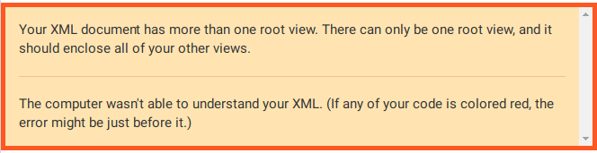
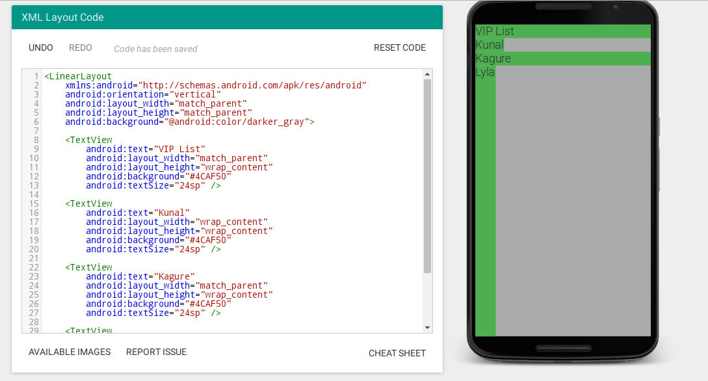
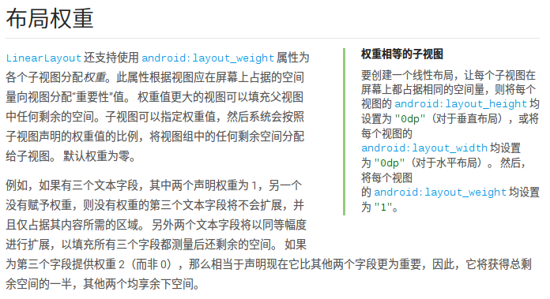
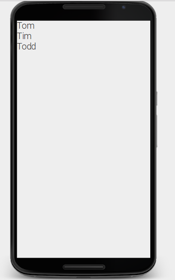
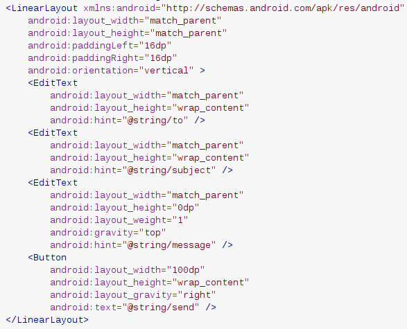
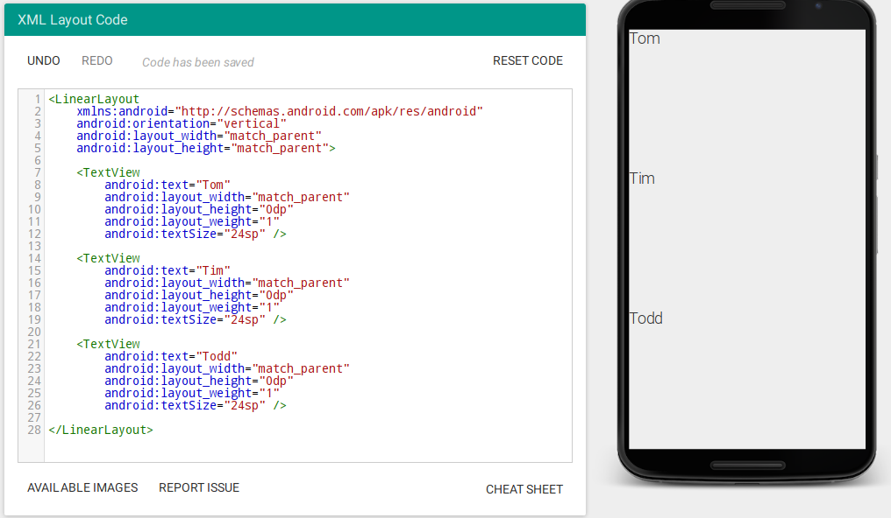
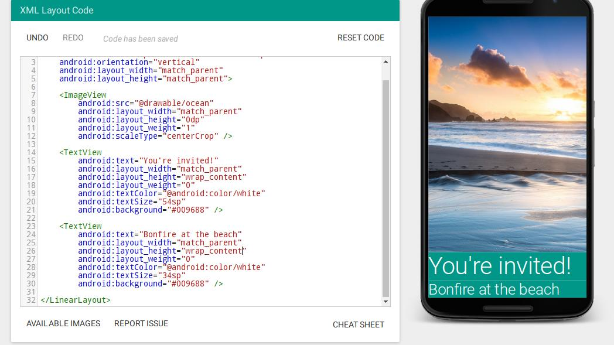

上次写markdown风的笔记连自己都觉得好干（但是至少不辣眼睛啊。。），所以这次试试看用中文写的有趣一点好了（有趣？不存在的。markdown？这风格肯定还是有的。）。
把很多view巧妙的放在一起，用ViewGroup啊哈。
学会复制粘贴走天下2333但是没有用。系统会报错的（还是太naive），报错信息。。自己试试就知道了2333
大概就长这样

子视图可以按照垂直列或者水平列摆放
RelativeLayout
可以将子视图与父布局相对排列
可以让子视图之间进行相对排列
好的拟声词又出现了。。我以为他不会再来了（捂脸.jpg）
android:orientation="vertical"子视图按照竖直方向排列
horizontal row水平；vertical column垂直；the default is horizontal
XML命名空间，前缀android特指给安卓的URL速记，可创建自定义属性
小哥好萌啊www
与父视图配对
单亲相亲网站？no！配对父视图是指视图与父视图等宽或等高wrap_content match_parent

嗯。。是我写丑了
屏幕的可利用空间
在手机上横屏与竖屏、在平板上屏幕空白会很明显。需要均衡的平铺这些View
stackoverflow是挺有用的2333
LayoutWeight（布局权重）
由于google被墙，linux还没用过vpn，看不到安卓开发者文档，没关系，百度也能百度得到的。

对，就是这样，但神奇的是我试了好多种都不对，好气啊。下面是代码和截图
<LinearLayoutxmlns:android="http://schemas.android.com/apk/res/android"android:orientation="vertical"android:layout_width="wrap_content"android:layout_height="wrap_content"><TextViewandroid:text="Tom"android:layout_width="wrap_content"android:layout_height="0dp"android:layout_weight="1"android:textSize="24sp" /><TextViewandroid:text="Tim"android:layout_width="wrap_content"android:layout_height="0dp"android:layout_weight="2"android:textSize="24sp" /><TextViewandroid:text="Todd"android:layout_width="wrap_content"android:layout_height="0dp"android:textSize="24sp" /></LinearLayout>

啊。。简直绝望。。于是我又仔细看了看他给的代码

老铁，没毛病。。好了小姐姐说之后会深入学习的。。好的嘛。
<LinearLayoutxmlns:android="http://schemas.android.com/apk/res/android"android:orientation="vertical"android:layout_width="match_parent"android:layout_height="match_parent"><TextViewandroid:text="Tom"android:layout_width="match_parent"android:layout_height="0dp"android:layout_weight="1"android:textSize="24sp" /><TextViewandroid:text="Tim"android:layout_width="match_parent"android:layout_height="wrap_content"android:textSize="24sp" /><TextViewandroid:text="Todd"android:layout_width="match_parent"android:layout_height="wrap_content"android:textSize="24sp" /></LinearLayout>
现在没毛病了嘿嘿

注意权重为0时保持设置的宽与高不变
水平也是一样
Email App的启示似乎更大。帮我记住了权重为0的情况
做完“作业”啦

属性名格式：android:layout_alignParentTop（上缘对齐）Value：True or False
android:layout_alignParentBottom（下端对齐）
Left/Right/layout_CenterHorizental（vertical） etc.
想象并理解代码在app里呈现的样子。嗯，这个就要靠大脑了，是的，脑补，脑子是个好东西希望我也有。
（诶，看来我想错了。。1B的进步显然在于举办派对）
锚定视图：其他元素通过锚定视图中的元素来确认位置，这些元素不动
所有的安卓属性都是通用属性。（涨姿势）
视图id（toleftof+...）：不仅仅存在于相对视图android:id="@+id/idname"
首先定义id，然后在toleftof等右侧直接加上id
padding：各方向增加某一长度 代码：android:padding="8dp" or android:paddingLeft/Right/Top/Bottom="8dp"
margin：从边缘向内收缩某一长度 代码：android:layout_margin="8dp" or android:layout_marginLeft/Right/Top/Bottom="8dp"
default->0